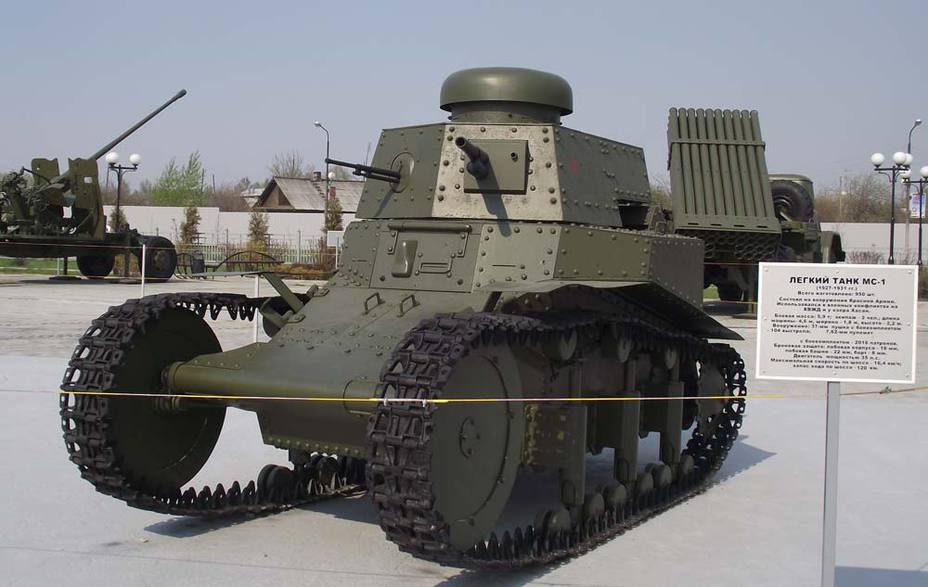
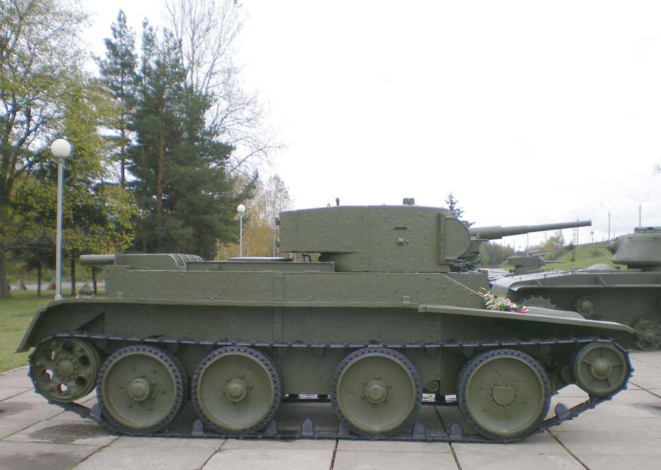
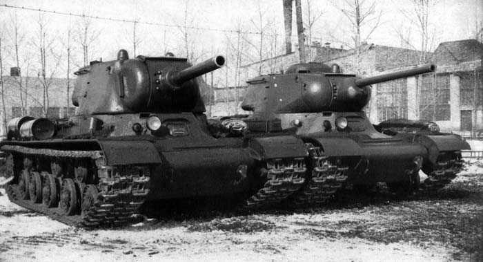

Первый этап развития танкостроения в СССР (1920–1929) – «Русский Рено», МС-1 (Т-18), Т-12 и Т-24

Лёгкий танк МС-1 в экспозиции Музея военной техники «Боевая слава Урала» в Верхней Пышме (Свердловская обл.)
Источник – wikimedia.org
Первый этап развития танкостроения в СССР (1920–1929) – «Русский Рено», МС-1 (Т-18), Т-12 и Т-24
История советского танкостроения началась во время Гражданской войны, когда в 1920–1921 годах на Сормовском судостроительном заводе в Нижнем Новгороде изготовили серией из 15 машин танк «Русский Рено», представлявший собой практически точную копию французского Renault FT-17.
К 1925 году эти машины успели устареть, и Главное управление военной промышленности (ГУВП) СССР поставило задачу создать новый танк. Разрабатывал его ленинградский завод «Большевик», взяв за основу специально закупленный для этого (по другим данным – трофейный, захваченный у поляков) итальянский «Fiat-3000». Подвеску скопировали с французского Renault NC27.
Обе использовавшиеся машины представляли собой техническое развитие конструкции Renault FT-17, поэтому спроектированный к 1927 году танк МС-1 (часто используется индекс Т-18) внешне был очень похож на «Русский Рено».
МС-1 отличался от прототипа целым рядом нововведений. В частности, поперечное расположение двигателя позволило значительно сократить длину танка. В следующий раз к этому техническому решению советские конструкторы вернулись только при проектировании Т-44 в 1944 году. Была также усовершенствована подвеска танка. С конца 1920-х на Т-18 вместо устаревшего спаренного 6,5-мм пулемёта Фёдорова начали устанавливать 7,62-мм пулемёт ДТ (конструкции Дегтярёва), который верой и правдой служил советским танкистам следующие 20 лет, вплоть до конца 1940-х
В том же 1927 году ГУВП сформулировало окончательные требования к танку массой 12 тонн. Эту более мощную и быструю машину сопровождения, которую в документах указывали как «манёвренный танк», доверили проектировать конструкторскому бюро Харьковского паровозного завода (ХПЗ). В результате получился совершенно новый средний танк Т-24, и в 1931 году ХПЗ получил заказ на производство 300 единиц. Правда, очень скоро заказ был аннулирован – заводу предписывалось перейти на производство танков БТ-2.
Фактически, за 1920-е годы в Ленинграде, Харькове и Москве сформировались три основных конструкторских центра советского танкостроения, которые в дальнейшем и определяли все тенденции его развития.
Зарубежные контракты – 1930 год
Работа советских инженеров над созданием танков и танкеток (Т-12, Т-17, Т-19, Т-20, Т-21, Т-23, Т-24, Т-25) показала, что Советскому Союзу не хватает опыта конструкторской деятельности подобного масштаба, кадров и элементарной производственной культуры. Чтобы не тратить время на решение этих вопросов отечественными специалистами, начальник Управления механизации и моторизации РККА комкор Иннокентий Халепский предложил высшему руководству страны закупить за рубежом образцы подходящих танков и лицензии на их производство, а также пригласить иностранных специалистов для работы в СССР. 5 декабря 1929 года было принято официальное решение о направлении за границу специальной комиссии во главе с Халепским. В 1930 году она посетила сразу несколько стран-производителей танков, среди которых особый интерес представляли Англия, Германия и США.
Первую сделку заключили 28 апреля между американской фирмой U.S. Wheel Track Layer Corp., принадлежавшей конструктору Джону Кристи, и Amtorg Trading Corp. – компанией, через которую оборудование и образцы вооружений вывозились в СССР. Согласно договору, Советский Союз приобретал два танка М1931 и право на их производство.
28 мая с британской фирмой Vickers & Armstrongs Ltd. был подписан контракт на поставку в СССР пятнадцати танков Mk.E «Модель A» в варианте с двумя пулемётными башнями под 7,7-мм пулемёты Vickers (будущие Т-26). Кроме того, были закуплены 20 танкеток Carden-Loyd Mk.IV (основа Т-27) и 15 машин Medium Mk.II. Трёхбашенный Medium Mk.III британцы продавать отказались.
Халепский схитрил: он заявил представителям британской фирмы-производителя, что уже получил разрешение на приобретение этой машины у военного ведомства Великобритании и теперь для отчётности перед руководством ему необходимо больше информации о танке. Так советская сторона получила максимальное количество материалов, благодаря которым позже в Ленинграде создали танк Т-28
Английский средний трёхбашенный танк Medium Mark III компании Vickers-Armstrong в цехе предприятия
Источник – wikimedia.org
После поражения в Первой мировой войне Германия не имела права производить танки, поэтому закупки бронетехники у неё не осуществлялись. Вместо этого Халепский пригласил в СССР целое конструкторское бюро под руководством Эдварда Гроте. Советские разработчики уже обращались к этим специалистам за консультациями при проектировании танкетки Т-17 и танка Т-20.
В марте 1930 года было создано КБ АВО-5, и за год его сотрудники разработали новую машину ТГ-1, две башни которой устанавливались одна на другую. Но танк оказался слишком дорогим: его стоимость составила 1,5 млн рублей, в то время как БТ-2, созданный на базе американского М1931, обходился всего в 60 тыс. В итоге машина в серию не пошла, а немецкие инженеры отправились домой. Советская же часть КБ на заводе №185 приступила к созданию тяжёлого пятибашенного Т-35, компоновку которого конструкторы позаимствовали у британского A1E1 «Independent».
Впрочем, со временем стало ясно, что многобашенные танки по ряду конструкторских причин не имеют перспектив развития, и в дальнейшем от них отказались.
Т-35 в экспозиции Музея бронетехники в Кубинке
Источник – wikimedia.org
Параллельно с разработкой Т-35 началось проектирование советского среднего трехбашенного танка – с учётом сведений об английском Medium Mk.III, привезённых комиссией Халепского. Руководил работой конструктор Семён Гинзбург. В результате к 1933 году был сконструирован Т-28 – один из самых хорошо вооружённых и бронированных средних танков в мире на середину 1930-х годов. При освоении его производства сформировалась танковая школа Кировского завода (бывшего Путиловского), сложилось специализированное конструкторское бюро СКБ-2, сыгравшее огромную роль в последующем развитии конструирования тяжёлых танков в СССР
Танки серии БТ (1931–1940)
После отмены заказа на Т-24 Харьковский паровозный завод начал производство танков БТ-2, созданных на базе американского М1931 конструкции инженера Кристи. Эта машина имела большое значение для последующего развития советского танкостроения: на ней впервые использовали подвеску Кристи и наклонные лобовые бронедетали. Танк компоновался по классической схеме, имел сварной корпус и передвигался как на гусеничном, так и на колёсном ходу. Дальнейшее развитие БТ-2 вылилось в создание БТ-5 с более просторной эллиптической башней на расширенном погоне, в котором монтировались спаренные 45-мм танковая пушка и 7,62-мм пулемёт. Корпус и ходовая БТ-5 от БТ-2 практически не отличались.

БТ-5 в экспозиции музея-диорамы «Прорыв блокады Ленинграда» возле Кировска
Источник – wikimedia.org
В 1935 году харьковчане шагнули дальше, создав танк БТ-7 – его ходовая часть уже значительно отличалась от М1931. На модель БТ-7М конструкторы установили танковый дизель В-2. В процессе работы над этим танком они пришли к идее создания принципиально новой машины, которой впоследствии предстояло стать легендарной «тридцатьчетвёркой».
Первый в Европе танковый дизель В-2 (1939)
1 сентября 1939 года на харьковском заводе №75, выделившемся из состава ХПЗ, в серийное производство был запущен легендарный 12-цилиндровый дизельный двигатель В-2, модификации которого устанавливались практически на все средние и тяжёлые советские танки вплоть до Т-64. Первая машина, на которой он начал монтироваться, – БТ-7М. Со временем в двигатель вносились незначительные изменения, но основные конструкторские решения оставались те же, что были найдены в Харькове в конце 30-х годов прошлого века.
Танковый дизель В-2 в музее истории танка Т-34
Источник – wikimedia.org
Тяжёлые танки серии КВ (1939–1943) – КВ-1, КВ-2, КВ-13, КВ-1С
К концу 1930-х годов Т-35 полностью устарел. Между КБ ленинградских танковых заводов развернулась борьба за создание советского серийного тяжёлого танка. Опытный завод №185 работал над двухбашенным Т-100 весом 58 тонн, башни которого размещались одна за другой на разных уровнях, что должно было позволить вести из них одновременную стрельбу. Такая компоновка определялась ТТХ, представленными военными заказчиками. На ленинградском Кировском заводе создали танк СМК (Сергей Миронович Киров) похожей компоновки и весом 55 тонн. Но, понимая, что однобашенную машину можно снабдить более толстой бронёй, «кировцы» в инициативном порядке создали ещё один тяжёлый танк – КВ (Клим Ворошилов).
Все три танка проходили «обкатку» во время Зимней войны с Финляндией в боях на Карельском перешейке в сводной танковой роте. По результатам испытаний выбор военных остановился на танке КВ, который с появлением его 152-мм варианта КВ-2 получил индекс КВ-1.
КВ-1 на Абердинском полигоне
Источник – wikimedia.org
Кировский завод продолжал исследовательские работы. Усовершенствование КВ-1 вылилось в создание модели КВ-1С – облегчённого варианта предшественника, конструировались новые модели с использованием уже разработанных узлов.
Дальнейшее развитие тяжёлых танков пошло в сторону уменьшения их массы и доведения её до уровня средних танков. При этом толщина брони сохранялась той же за счёт более эффективного использования забронированного объёма. Результатом этих работ явилось создание экспериментального среднего танка КВ-13, который ленинградцы сконструировали, уже находясь в эвакуации в Челябинске. Однако по совокупности ТТХ и технологичности машина не смогла поспорить с уже созданным к тому времени средним танком Т-34, хотя толщина её лобовой брони в 120 мм была очень привлекательной.

Средний танк КВ-13 и его конструктивное развитие «Объект 234» (промежуточный вариант перед танком ИС). У него ещё было пять катков (на ИС добавили шестой), а в башне установлена 122-мм гаубица У-11
Источник – inarms.ru
Когда к середине 1943 года на фронте в массовом порядке появились тяжёлые немецкие «Тигр» и «Пантера», о КВ-13 вспомнили. В результате его доработки появилась новая линейка советских тяжёлых танков ИС. При перестройке производства на новые машины некоторое время выпускался переходный вариант – КВ-85, представлявший собой модернизированный КВ-1С с установленным в его башне 85-мм орудием вместо 76-мм пушки.
Средний танк Т-34 (1940–1943)
В сентябре 1938 года КБ харьковского завода получило заказ на проектирование нового лёгкого танка А-20. В качестве силовой установки на нём планировалось использовать танковый дизель В-2. Верхняя лобовая деталь должна была выполняться прямой, наклонённой под углом, близким к 60°, что значительно увеличивало вероятность рикошета снаряда от 45-мм плиты. Этот танк, как и все машины серии БТ, Москва обязывала сделать на колёсно-гусеничном ходу. Но у конструкторов ХПЗ во главе с Михаилом Кошкиным была на этот счёт своя точка зрения. В конце концов Сталин, лично курировавший развитие советского танкостроения, позволил харьковчанам разработать собственный вариант танка с противоснарядным бронированием и полностью гусеничным движителем.
Довоенные танки производства завода №183 (г. Харьков). Слева направо: БТ-7 (А-8), А-20, Т-34–76 с пушкой Л-11 (1940 г.), Т-34–76 с пушкой Ф-34 (1941 г.)
Источник – wikimedia.org
Так появился проект танка А-32, позже ставший проектом А-34, а после убедительной победы на сравнительных полевых испытаниях (в том числе над А-20) – знаменитым Т-34. От подавляющего большинства западных аналогов он выгодно отличался наклонной лобовой бронёй, 76-мм пушкой Ф-34, танковым дизелем В-2 и подвеской Кристи. В совокупности всё это делало его быстрой и хорошо забронированной машиной с высокой проходимостью и мощной надёжной пушкой. До появления «Тигров» и «Пантер», а также Pz.Kpfw. IV с модернизированными орудиями Т-34 превосходил немецкие танки по своим характеристикам. Танкистов вермахта выручали в боях только опыт и слаженность действий.
Тяжёлые танки серии ИС во время войны (1943–1945) – ИС-1 и ИС-2
ИС-1 проектировался как замена КВ-1. С появлением на фронте немецких «Тигров» работы ускорились. Изначально запланированную 76-мм пушку заменили на 85-мм. Это привело к увеличению размеров и массы конструкции, и из разряда средних (прототип танка КВ-13) машина перешла в разряд тяжёлых. Завод выпустил всего 130 таких машин – вскоре их заменили на ИС-2, которые были вооружёны 122-мм орудием и могли на равных бороться с немецкими «Тиграми» и с «Пантерами».
ИС-1 в экспозиции Киевского музея Великой Отечественной войны
Источник – фотоархив автора
Многие немецкие танкисты признавали, что тяжёлый ИС-2 был достойным соперником. Его 122-мм пушка легко пробивала броню «Пантер» и «Тигров» и была эффективна при штурме укреплённых районов. Танк показал себя настолько хорошо, что был полностью снят с вооружения российской армии только в 1995 году. Работы над усилением его бронирования привели к созданию новых танков ИС-3 и ИС-4.
Средний танк Т-34–85 (1944–1958)
Необходимость противостоять «Тиграм» и «Пантерам» заставила советских конструкторов не только ускорить разработку тяжёлых машин, но также увеличить мощность пушек и защиту средних танков. В результате был разработан танк Т-43 с более мощной бронёй корпуса, новой башней с 85-мм пушкой и торсионной подвеской. Однако переход на производство новой машины привёл бы к уменьшению общего выпуска. Кроме того, была превышена допустимая масса конструкции, поэтому решили продолжить производство Т-34 с башней от Т-43. Новый танк получил индекс Т-34–85.
Т-34–85 в экспозиции Киевского музея Великой Отечественной войны
Источник – фотоархив автора
Машина прекрасно себя зарекомендовала и – параллельно с новыми моделями Т-44 и Т-54 – производилась в СССР до 1950 года, а в мире – до 1958, в том числе на польских и чешских предприятиях. Этот танк помимо ВОВ участвовал во множестве локальных конфликтов на Ближнем Востоке, в Африке и Латинской Америке. Последнее применение его в боях – войны на Балканах, вспыхнувшие в 90-х годах прошлого века после развала Югославии.
Тяжёлые танки серии ИС в послевоенный период (1945–1966) – ИС-3, ИС-4, Т-10 (ИС-5, ИС-8)
Одновременно с производством танка ИС-2 на Опытном заводе №100 и Челябинском Кировском заводе (ЧКЗ) велись работы над созданием новых тяжёлых танков. Инженеры спроектировали ИС-4, являвшийся логическим продолжением конструкции ИС-2. Но военные приёмщики отдали предпочтение ИС-3, корпус которого со знаменитым «щучьим носом» спроектировали на заводе №100. Башню сконструировали на ЧКЗ, там же было налажено и серийное производство. Однако первые месяцы эксплуатации ИС-3 в войсках выявили ряд недостатков, и его производство было остановлено.
ИС-3 в экспозиции Киевского музея Великой Отечественной войны
Источник – фотоархив автора
Разработка тяжёлых танков активно продолжалась после ВОВ. Наиболее удачным оказался ИС-8 – проект челябинских конструкторов завода №100 (на начальной стадии работ в 1944 году танк имел индекс ИС-5). Боевая масса машины составляла 50 тонн. ИС-8 также являлся развитием конструкции ИС-3, так что «щучий нос» у него сохранился. Окончательный индекс Т-10 он приобрёл в 1953 году после смерти Иосифа Сталина, в честь которого называлась вся линейка танков ИС. Число «10» означало, что это десятый тяжёлый танк, принятый на вооружение в СССР. Машина оказалась настолько удачной, что с вооружения её сняли только в 1993 году. Лобовое бронирование Т-10 достигало 120 мм. Это был последний серийный тяжёлый советский танк – на смену ему вскоре пришли быстрые, хорошо вооружённые средние танки, получившие название «основных».
Т-10 в экспозиции Киевского музея Великой Отечественной войны
Источник – фотоархив автора
Средние танки Т-54 и Т-55 (1946–1979)
После окончания ВОВ вооружение танка Т-44 не вполне отвечало современным требованиям: его башня, взятая у Т-34–85 с 85-мм пушкой, на тот момент уже устарела. К 1946 году была разработана новая башня со 100-мм орудием. В таком виде танк под индексом Т-54 пошёл в серию. Однако эксплуатация в войсках выявила целый ряд недостатков, и в 1949 году машина прошла глубокую модернизацию: была изменена форма башни и уменьшено бронирование для облегчения конструкции. В 1951 году башню Т-54 снова заменили, в этот раз на полусферическую, после чего танк приобрёл окончательный, привычный нам силуэт. Дальнейшая модернизация касалась уже улучшения конструкции орудийного стабилизатора, эжектора, противоатомной защиты, боеукладок, приборов, аппаратуры и т.д. Результатом всех этих изменений стал танк Т-55, созданный под руководством Леонида Карцева на нижнетагильском заводе №183.
Т-55 в экспозиции Киевского музея Великой Отечественной войны
Источник – фотоархив автора
Предшественником Т-54 был танк Т-44, выпускавшийся в 1944–1958 годах. Он не участвовал в боевых действиях во время войны, во многом из-за того, что новейшие технические решения, реализованные в Т-44 и позволившие СССР на десятилетия опередить конкурентов, могли попасть в руки противника. Поперечное, а не продольное расположение силовой установки уменьшило длину танка, а иное расположение части агрегатов на дизеле В-44 позволило снизить высоту машины. Начиная с Т-44 на советских средних танках появилась торсионная подвеска. Кроме того, отказались от курсового пулемёта и стрелка-радиста
Т-44 в Музее города Вольска
Источник – wikimedia.org
Основной танк Т-62 (1961–1975)
Создание Т-62 фактически поставило крест на разработке и производстве тяжёлых танков в СССР. Установка гладкоствольной 115-мм пушки 2А20 по мощности вооружения приблизила средние танки к тяжёлым (последние оснащались 122-мм нарезными орудиями). При этом скорострельность Т-62 была выше. Кроме того, на последующих моделях планировалась установка автомата заряжания, что делало тяжёлые танки совершенно бесполезными. Лобовое бронирование Т-62 также приближалось к тяжёлым (100 мм), а проходимость была значительно выше.
Т-62 в экспозиции Киевского музея Великой Отечественной войны
Источник – фотоархив автора
Пришло время основных танков. Вскоре после Т-62 в Харькове в КБ Морозова создали Т-64. Последующие советские танки – Т-72, Т-80, а также российский Т-90 и украинские «Оплот» и «Булат» используют конструкторские решения, реализованные в этой машине
Традиции советских танкостроителей не исчезли после распада СССР. В 2015 году завершилось создание основного российского танка нового поколения Т-14 «Армата» с необитаемой башней, не имеющего зарубежных аналогов. 9 мая он примет участие в параде на Красной площади, посвящённом 70-летию Победы, после чего поступит в Вооружённые силы России. Эта машина призвана окончательно заменить славно послужившие машины серий Т-64, Т-72, Т-80 и Т-90.